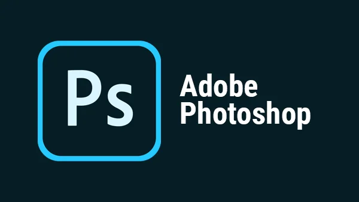
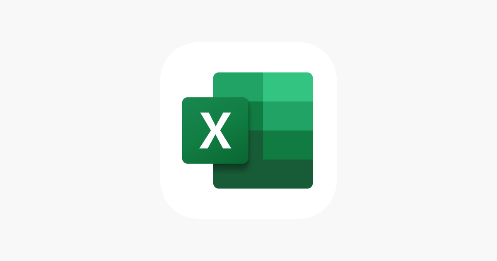

Creators:
Google was founded in September 1998 by Larry Page and Sergey Brin, two PhD students at Stanford University. They developed a search engine that utilized a unique algorithm called PageRank, which ranked web pages based on their relevance and the number of links pointing to them.
Goals:
From its inception, Google's primary goal has been to organize the world's information and make it universally accessible and useful. This mission has guided the company's growth and expansion into various products and services beyond search.
Some of Their Features and Products are:
1.Search Engine:
Google Search is the company's flagship product, known for its speed, accuracy, and user-friendly interface. It employs advanced algorithms to deliver relevant results to users' queries.
2.Google Maps:
A mapping service that provides directions, local business information, and street views. It has transformed how people navigate and find places, integrating features like real-time traffic updates and user reviews.
3.Gmail:
Launched in 2004, Gmail is a free email service that offers ample storage, spam filtering, and integration with other Google services. It has become one of the most widely used email platforms globally.
4.Google Assistant:
A virtual assistant powered by artificial intelligence, Google Assistant can perform tasks, answer questions, and control smart home devices. It is available on smartphones, smart speakers, and other devices.
5.Google Chrome:
A web browser known for its speed, simplicity, and security. Chrome supports a wide range of extensions and is one of the most popular browsers worldwide.
In Conclusion
Conclusion
Today, Google is more than just a search engine; it has evolved into a tech giant with a diverse portfolio of products and services that touch nearly every aspect of daily life. Its ongoing mission to make information accessible continues to shape the digital landscape, influencing how people connect, learn, and communicate.
Creators:
Google was founded in September 1998 by Larry Page and Sergey Brin, two PhD students at Stanford University. They developed a search engine that utilized a unique algorithm called PageRank, which ranked web pages based on their relevance and the number of links pointing to them.
Goals:
From its inception, Google's primary goal has been to organize the world's information and make it universally accessible and useful. This mission has guided the company's growth and expansion into various products and services beyond search.
Some of Their Features and Products are:
1.Search Engine:
Google Search is the company's flagship product, known for its speed, accuracy, and user-friendly interface. It employs advanced algorithms to deliver relevant results to users' queries.
2.Google Maps:
A mapping service that provides directions, local business information, and street views. It has transformed how people navigate and find places, integrating features like real-time traffic updates and user reviews.
3.Gmail:
Launched in 2004, Gmail is a free email service that offers ample storage, spam filtering, and integration with other Google services. It has become one of the most widely used email platforms globally.
4.Google Assistant:
A virtual assistant powered by artificial intelligence, Google Assistant can perform tasks, answer questions, and control smart home devices. It is available on smartphones, smart speakers, and other devices.
5.Google Chrome:
A web browser known for its speed, simplicity, and security. Chrome supports a wide range of extensions and is one of the most popular browsers worldwide.
In Conclusion
Conclusion
Today, Google is more than just a search engine; it has evolved into a tech giant with a diverse portfolio of products and services that touch nearly every aspect of daily life. Its ongoing mission to make information accessible continues to shape the digital landscape, influencing how people connect, learn, and communicate.
2.Skype
Creators:
Skype was founded in 2003 by Niklas Zennström and Janus Friis, two entrepreneurs from Sweden and Denmark, respectively. The development team included Ahti Heinla, Priit Kasesalu, and Jaan Tallinn, who were instrumental in creating the technology behind Skype’s voice-over-IP (VoIP) services. The service was launched in August 2003 and quickly gained popularity for enabling free voice and video calls over the internet.
Goals
Skype's primary goal has been to facilitate communication across distances, making it easy for people to connect with friends, family, and colleagues anywhere in the world. Initially focused on providing free voice calls, the platform has evolved to support various forms of communication, including video calls, instant messaging, and collaboration tools. The overarching mission is to break down barriers to communication, allowing users to stay connected effortlessly.
Key Features and Products
1.Voice and Video Calling:
Skype’s core functionality allows users to make free voice calls and video calls to other Skype users. It supports high-definition video and crystal-clear audio, making it suitable for personal and professional conversations.
2.Instant Messaging:
Users can send text messages, share images, and send files through Skype’s instant messaging feature. This allows for quick communication alongside voice and video calls.
3.Group Calls:
Skype supports group calls, enabling multiple participants to join a single voice or video call. This feature is particularly useful for team meetings, family gatherings, and online events.
4.Skype for Business:
Initially a separate product, Skype for Business was tailored for corporate use, integrating with Microsoft Office tools. It offered additional features for team collaboration, such as scheduling meetings and managing contacts. (Note: Skype for Business has since been integrated into Microsoft Teams.)
5.Mobile and Desktop Applications:
Skype is available on multiple platforms, including Windows, macOS, iOS, and Android. This cross-platform support enables users to stay connected from various devices.
Bringing the Topic Of Skype to an End
Skype has evolved from a simple voice calling service to a comprehensive communication platform that enables users to connect through various means. With its focus on accessibility and ease of use, Skype continues to play a vital role in personal and professional communication, shaping how people interact in an increasingly digital world.
3.Zoom

Creators
Zoom Video Communications was founded in April 2011 by Eric Yuan, a former executive at Cisco WebEx. Yuan envisioned a platform that would simplify video conferencing and enhance user experience. The company quickly gained traction, becoming a popular choice for businesses and individuals seeking reliable video communication solutions.
Goals
Zoom's primary goal is to provide a seamless and accessible video conferencing experience that enhances communication and collaboration. The platform aims to connect people, regardless of their location, facilitating effective meetings, webinars, and virtual events. Zoom's mission is to make video communications as easy as sending an email.
Key Features and Products:
1.Video Conferencing:
Zoom's core functionality is its video conferencing capability, which allows users to host high-quality video calls with up to 1,000 video participants (depending on the plan). Features include HD video and audio, screen sharing, and recording options.
2.Screen Sharing:
Participants can share their screens during meetings, making it easy to present documents, slides, and applications. Multiple participants can share their screens simultaneously.
3.Meeting Recording:
Users can record meetings locally or to the cloud, allowing them to revisit discussions or share them with others who could not attend.
4.Security Features:
Zoom has implemented various security measures, including password protection, waiting rooms, and end-to-end encryption, to ensure safe and secure meetings.
5.Mobile and Desktop Applications:
Zoom is available on multiple platforms, including Windows, macOS, iOS, and Android, allowing users to join meetings from virtually any device.
Bring this to a conclusion
Zoom has transformed the landscape of video communication, providing a versatile platform for meetings, webinars, and collaboration. Its commitment to accessibility and ease of use continues to connect people around the world, enabling effective communication in an increasingly digital age.
4.Adobe Photoshop

Creators:
Adobe Photoshop was developed by Thomas and John Knoll. The two brothers began working on the software in 1987, initially as a simple program for displaying grayscale images on a monochrome display. The project caught the attention of Adobe Systems, which acquired the rights in 1988. The first official version, Photoshop 1.0, was released in 1990 for Macintosh computers. Since then, Photoshop has become a cornerstone of digital imaging and graphic design.
Goals:
The primary goal of Adobe Photoshop is to provide powerful tools for image editing, manipulation, and enhancement. It aims to empower creative professionals—such as photographers, graphic designers, and artists—by offering an extensive range of features that allow for intricate and precise control over digital images. Photoshop strives to facilitate creativity and innovation in visual media.
Some features about Adobe Photoshop
1.Layers:
One of Photoshop's most powerful features, layers allow users to work on individual elements of an image without affecting others. This non-destructive editing capability is essential for complex compositions.
2.Selection Tools:
Photoshop offers a variety of selection tools, such as the Marquee, Lasso, and Magic Wand tools, which enable users to isolate and manipulate specific areas of an image.
3.Filters and Effects:
Photoshop includes a wide array of filters that can be applied to images to create various effects, such as blurring, sharpening, and stylization. These effects enhance creativity and provide artistic options.
4.Brushes and Painting Tools:
Photoshop includes customizable brushes and painting tools, allowing users to create digital artwork, illustrations, and designs. Artists can adjust brush settings for size, opacity, and flow.
5.3D Capabilities:
Photoshop provides basic 3D modeling and texturing features, enabling users to create and manipulate 3D objects and integrate them into their designs.
Before we enter the final app, This is the conclusion of Adobe Photoshop
Adobe Photoshop is a powerful and versatile tool that has transformed how images are created and edited. Its extensive features and capabilities make it an essential application for creative professionals worldwide, fostering creativity and innovation in visual media. As it continues to adapt to new technologies and user needs, Photoshop remains at the forefront of digital imaging.

5.Microsoft Excel
Creators:
Microsoft Excel was developed by Microsoft, with its first version released in 1985 for the Apple Macintosh. The development was led by Doug Klunder and his team, who aimed to create a powerful spreadsheet program that could take advantage of the Macintosh’s graphical user interface. The Windows version of Excel was launched in 1987. Over the years, Excel has evolved significantly, becoming a staple in business, finance, and data analysis.
Goals:
The primary goal of Microsoft Excel is to provide users with a powerful tool for data organization, calculation, analysis, and visualization. It aims to facilitate productivity and efficiency in tasks related to financial modeling, budgeting, data analysis, and reporting. Excel is designed to be accessible for both novice and advanced users, catering to a wide range of needs in various industries.
Key Features
1.Spreadsheet Interface:
Excel features a grid of cells arranged in rows and columns, allowing users to enter and manipulate data easily. This layout is intuitive for organizing numerical and textual information.
2.Data Visualization:
Excel offers a variety of chart types (e.g., bar, line, pie, scatter) to help users visualize data effectively. Users can create dynamic and customizable charts to enhance presentations and reports.
3.Collaboration Tools:
With Microsoft 365 integration, users can collaborate in real-time, sharing workbooks with colleagues. Excel supports comments and version history, making it easier to manage collaborative projects.
4.Data Import and Export:
Users can import data from various sources, including databases, text files, and other applications. Excel also allows for easy export to different formats, such as CSV and PDF.
5.Mobile and Cloud Access:
Excel is available on multiple platforms, including Windows, macOS, iOS, and Android. With Microsoft 365, users can access and edit their spreadsheets from anywhere, enhancing flexibility and productivity.
And we finally have Microsoft Excel
Microsoft Excel is a versatile and powerful tool that has transformed how individuals and organizations handle data. Its extensive features and functionalities make it indispensable for tasks ranging from simple calculations to complex data analysis and reporting. As it evolves, Excel remains a key component of the Microsoft Office suite, enabling users to work smarter and more efficiently with data.